AnyPortrait > Manual > Edit Mode Options
Edit Mode Options
1.3.0
The previous Modifier Lock function has been improved to Edit Mode Options in AnyPortrait v1.3.0.
You can set how the modifier behaves in the Edit Mode, how objects appear in the workspace, and so on.
This page describes the various options for Edit Mode one by one.
Settings for Edit Mode Options

When you select Edit Mode Options in the View Menu, the above menus appear.

1. Settings : Settings for Edit Mode Options.
2. Modifier operation options : Options for how modifiers will operate.
3. Preview options : Options for previewing the calculation result of bone or color.

Let's open the settings of the Edit Mode Options.
(1) Open the View Menu.
(2) Select Edit Mode Options > Settings.
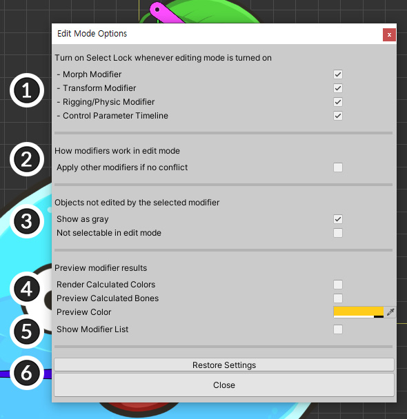
This is the setting screen of the Edit Mode Options.
There are additional settings along with the options in the edit mode.
(1) Set when Selection Lock turns on automatically.
(2) Set whether to make modifiers other than the selected modifier work.
(3) Set whether to make objects not registered in the modifier appear gray, and not be selectable.
(4) Set to preview the calculation result with other modifiers.
(5) Modifier List to make it easier to check which modifier is operating.
(6) Buttons to initialize the settings or close the settings window.

When Modifier List is turned on, the above information appears in the workspace.
Multiple Modifiers to work in Edit Mode
AnyPortrait has the feature of complex operation by adding multiple modifiers freely.
For this flexible system characteristic, there is a limitation that only the selected modifier works in Edit Mode.
AnyPortrait v1.3.0 relieves this limitation a bit.
Whenever possible, i.e. if there is no conflict, users can use the option of allowing multiple modifiers to work.
This is a simple sample for the explanation.

Morph modifier deforms the shape of the slime's meshes.
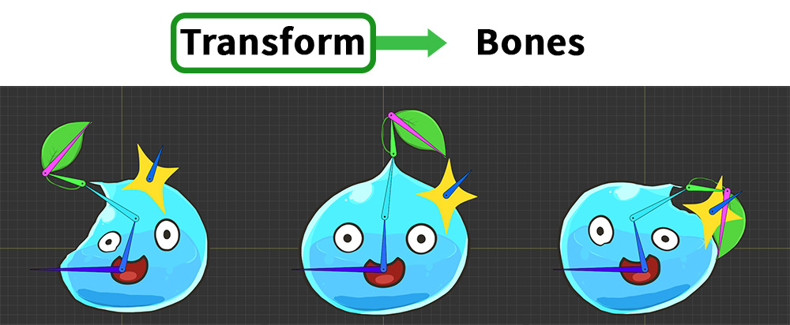
Transform modifier moves the bones.
Rigging modifier is also applied, so the slime moves according to the movement of the bones.

In this sample, you can see how the modifiers were applied.
These modifiers are controlled by Control Parameters.

First, let's make the Morph modifier work together while editing the Transform modifier.
(1) Select the Transform modifier.
(2) Turn on Edit Mode.
(3) You can move the bones according to the control parameters.

(1) Open the View Menu.
(2) Turn on Edit Mode Options > Apply Multiple Modifiers if no conflict (shortcut D ).

In the Multiple Modifiers state, the status icon changes as above.

Let's move the Control Parameter slider corresponding to the Morph modifier, not the Transform modifier to be edited.
Previously, the Morph modifier did not work, so changing the Control Parameter does not work for the meshes.
But now you can see the meshes are affected by the Morph modifier as above in the Multiple Modifiers state.
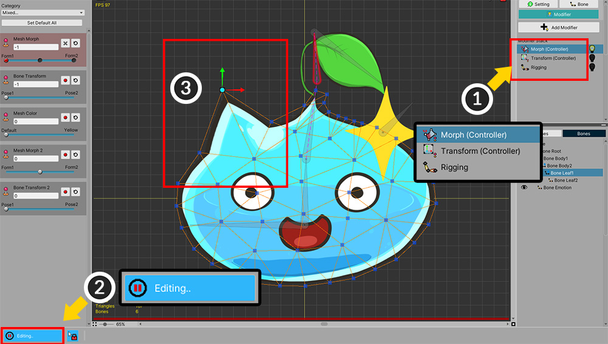
Conversely, let's make the Transform modifier work while editing the Morph modifier.
(1) Select the Morph modifier.
(2) Turn on Edit Mode.
(3) The vertices of the mesh can now be edited.
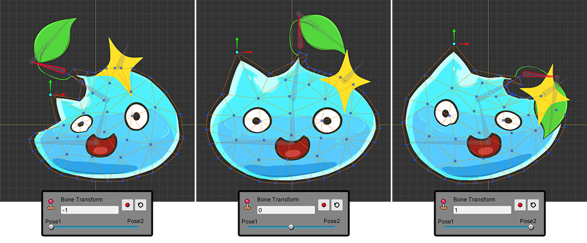
In the same way, turning on the Apply Multiple Modifiers option, the Transform and Rigging modifiers will work, so you can see the bones and meshes move.

Also, it is now possible to edit vertices with the Apply Multiple Modifiers option turned on.
The rules for the different modifiers are as follows:
- Other keys of the modifier being edited do not work.
- Other modifiers are not applied to the objects being edited. (Except for the Rigging modifier)
- For objects not being edited, all available modifiers work.
How the above sample worked according to the above rule is as follows.
(1) Since the Transform modifier only controls Bones, the Morph modifier could be applied to Meshes. This is because Meshes are not registered in Transform modifier.
(2) Conversely, when the Morph modifier is selected, only Meshes are controlled, so the Transform modifier is applied to the Bones. However, the Rigging modifier works at the same time, so it looks as if the Meshes are affected by the Transform modifier.
In other words, this function can work effectively when only modifiers with different meshes and bones are registered as above.
Of course, according to the rules above, it may apply in other cases as well.

In the previous example, it is covered the case where modifiers target different objects.
Conversely, let's look at the case where modifiers target the same object.
In this step, let's prepare a Morph (Controller) modifier and a Morph (Animation) modifier so that we can edit a common mesh.

The sample for testing was configured as above.
(1) Timelines were added as Control Parameter type and Morph (Animation) type respectively.
(2) Morph (Animation) only controls the mesh called "Emotion".
(3) The "Emotion" mesh above is registered in both the Morph (Controller) modifier and the Morph (Animation) modifier.
(4) Other meshes are registered only in the Morph (Controller) modifier.

(1) When control parameters are controlled with keyframes, (2) the slime is deformed by the Morph (Controller) modifier.

(1) Select the Morph (Animation) timeline.
(2) Turn on Edit Mode.
(3) "Emotion" The mesh can be edited.
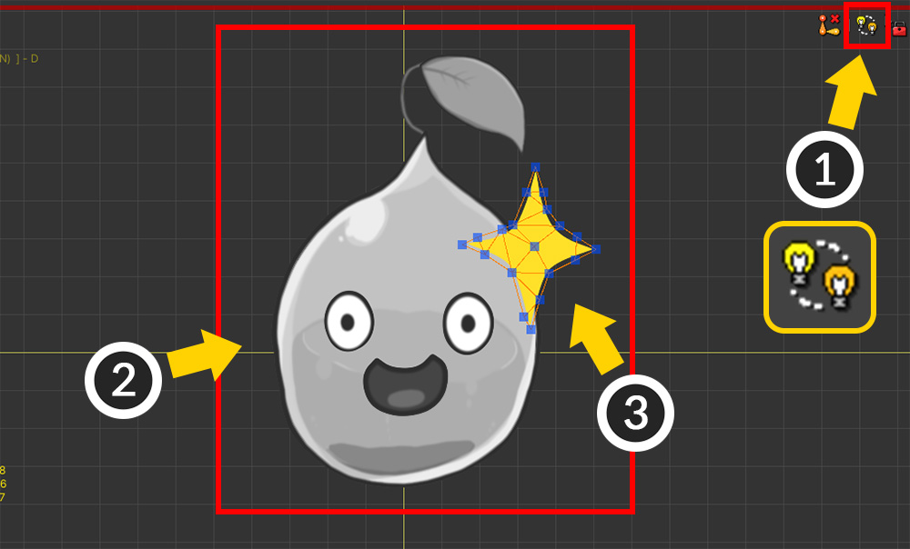
(1) Turn on the Apply Multiple Modifiers option (shortcut D ).
(2) You can see that other modifiers including the Morph (Controller) modifier are activated and applied to most of the meshes.
(3) But the "Emotion" mesh does not have the Morph (Controller) applied.
This is because other modifiers are not applied to the "object currently being edited" by the rules described above.

In this state, let's edit the shape of the "Emotion" mesh.

(1) Turning off Edit Mode, then (2) you can see that both the Morph (Animation) modifier and the Morph (Controller) modifier are applied to the "Emotion" mesh.
Displaying non-edited objects as Gray

(1) Open the View Menu.
(2) Turn on Edit Mode Options > Show Non-Edited object as Gray (shortcut Alt+G ).

This option is a function to show the rest of the objects as gray except for the objects edited by the modifier.
If there are a lot of objects in the workspace, this option may be convenient because the targets of the modifier can be easily identified.
Keeping Selection Lock for non-edited objects

(1) Open the View Menu.
(2) Turn on Edit Mode Options > Selection lock for Non-edited objects (shortcut Alt+D ).

The Keep Selection Lock for non-edited objects option changes the behavior of Selection Lock.
(1) Turn on Edit Mode.
(2) Release the Selection Lock (shortcut key S ).
(3) If you check the Status Icon, "Red and Blue Lock Icon" appears instead of "Blue Lock Icon".
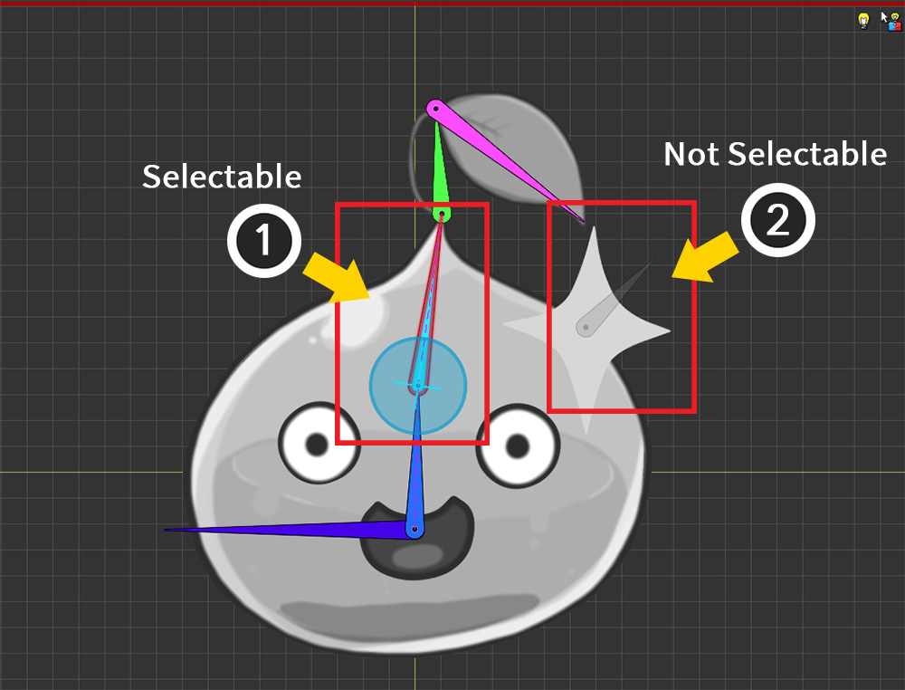
By default, you can select all objects by turning off Selection Lock.
However, when this option is turned on, Selection Lock is always maintained for "Objects not targeted by the modifier".
In other words, you cannot select "Objects not targeted by the modifier" regardless of whether Selection Lock.
As above, (1) objects that are the target of the modifier can be freely selected, but (2) other objects cannot be selected even if Selection Lock is released.
If you are using a lot of modifiers, have a lot of objects, and it is difficult to select an appropriate object with turning off Selection Lock, this option may be helpful.
Preview results
In Edit Mode, only one modifier is operated by default, so you cannot see the calculation results of other modifiers while working.
However, for Bone and Mesh Color, you can preview the calculation results of all modifiers even in Edit Mode.
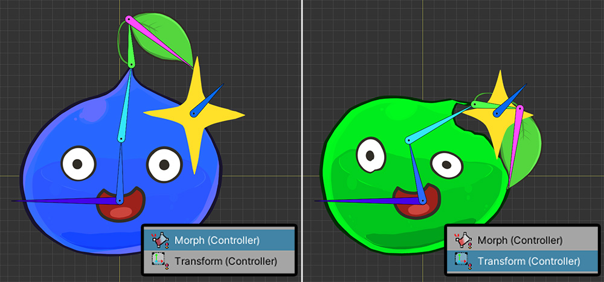
We have prepared a simple example for explanation.
(1) The Morph (Controller) modifier changes the color of the mesh to blue.
(2) The Transform (Controller) modifier moves the bones and changes the color of the mesh to green.
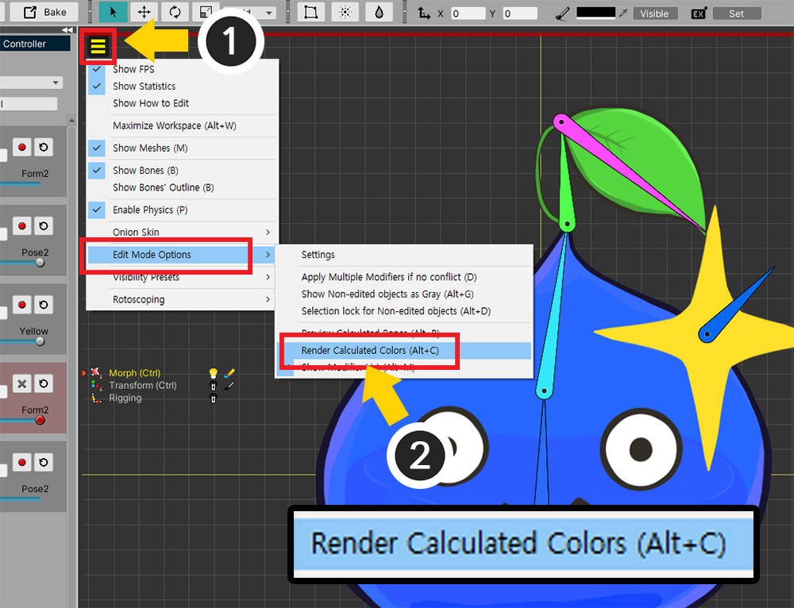
First, let's use the Preview Coloroption.
(1) Open the View Menu.
(2) Turn on Edit Mode Options > Render Calculated Colors (shortcut Alt+C ).

(1) Even with the modifier selected and Edit Mode turned on, you can see that all modifier color values are applied.
(2) The Preview Color icon appears.
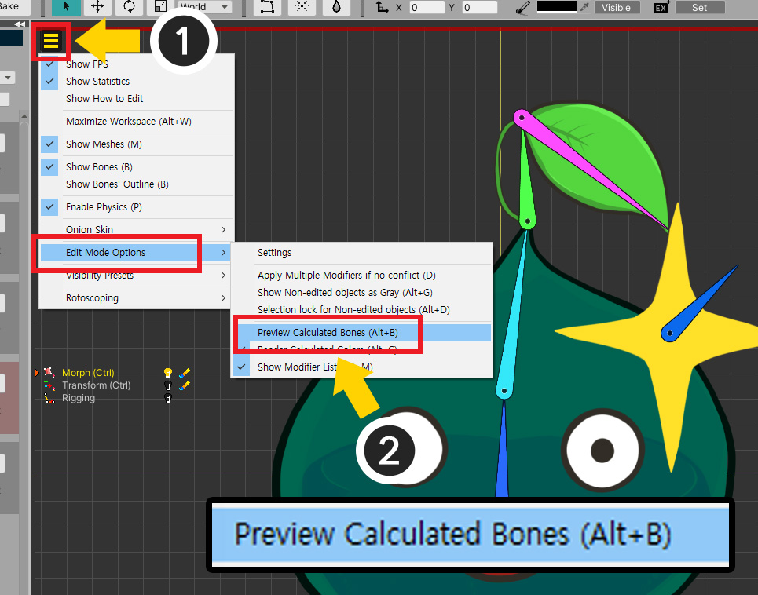
Let's use the Preview Bones option.
(1) Open the View Menu.
(2) Turn on Edit Mode Options > Preview Calculated Bones (shortcut Alt+B ).
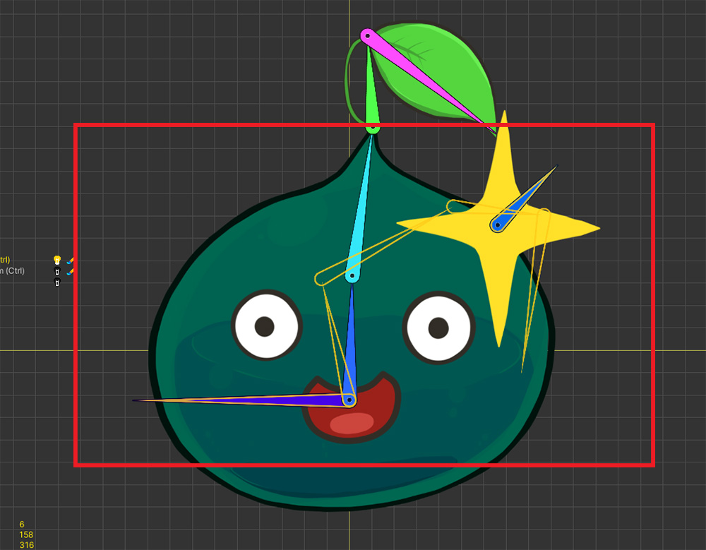
With a modifier selected other than the Transform (Controller) modifier, turn on Edit Mode.
The modifier operation result for the bone is displayed in the form of the yellow outline.

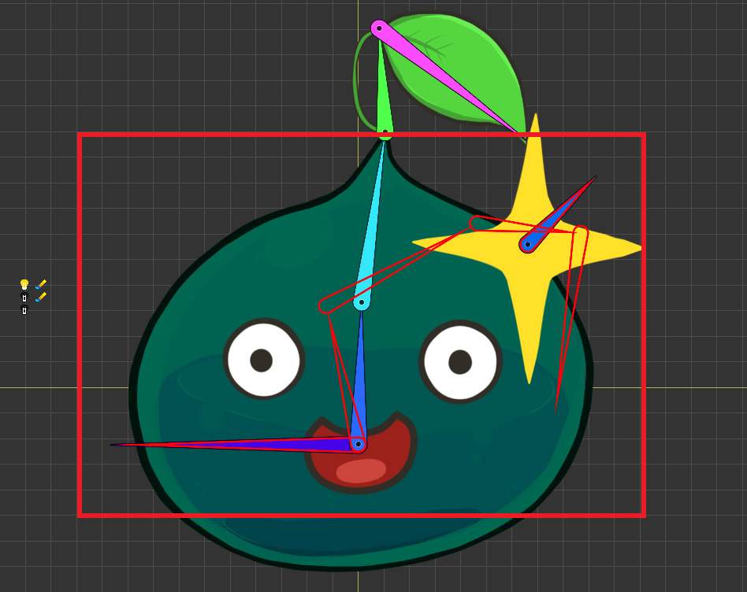
The color can be changed in Edit Mode Option Settings.

If Preview Color and Preview Bones are turned on, you can check them with Status Icon.
The icons above are the icons that appear in the case of Preview Color, Preview Bone, and Preview Color and Bone, respectively.